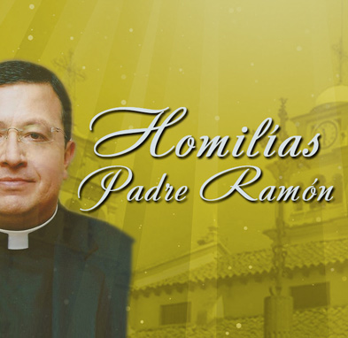

HOMILIAS DEL PADRE RAMON


Hechos de los apóstoles 12,1-11 Sal 34 2 Timoteo 4,6-8.17-18 Mateo 16,13-19
Sin lugar a duda, después de Jesús, el mayor número de menciones y referencias en el Nuevo Testamento se hace sobre éstos dos apóstoles: Pedro y Pablo. Las narraciones y escritos muestran que los dos se constituyeron como punto de referencia para la comunidad de los creyentes que continuó la obra salvadora de Jesucristo.
Los textos del Nuevo Testamento muestran como Dios los llamó a cada uno de ellos en diferentes circunstancias de la vida, en su propia realidad, con sus virtudes, miedos y pecados; distinguiendo éste llamado de la forma como lo hizo con los otros apóstoles. Ellos, Pedro y Pablo, atendieron el llamado que el Señor le hizo y emprendieron el camino llenos de la experiencia con el resucitado; camino que los llevó a confesar su fe hasta participar en el mismo destino de su Maestro.
El testimonio de estos apóstoles ha permitido que creyentes de todos los tiempos veamos en estos “súper-apóstoles” un modelo de vida con el cual nos identificamos hasta el punto de permitir que nuestro camino de fe se construya en referencia tanto a estos dos testigos fidedignos del Señor como a quienes hasta hoy les suceden. En el evangelio de hoy, Jesús le dice a Pedro: “¡Dichoso tú, Simón, hijo de Jonás! Porque esto no te lo ha revelado nadie de carne y hueso, sino mi Padre que está en el cielo” (Mt 16,17). Nunca serán las capacidades de Pedro, sino el reconocimiento de que Dios lo llama, lo mueve, lo impulsa y le da fuerza para que cumpla con su misión a pesar de su fragilidad. El Señor Jesús continúa haciendo su obra y manteniendo a su comunidad unidad en él, en Pedro y sus sucesores: “Mientras Pedro estaba en la cárcel bien custodiado, la Iglesia oraba insistentemente a Dios por él” (Hch 12,5).
También el apóstol Pablo da testimonio de su confianza en Dios al acercarse el momento de su martirio: “El Señor me ayudó y me dio fuerzas para anunciar íntegro el mensaje” (2 Tm 4,17). Y luego: “El Señor me seguirá librándome de todo mal, me salvará y me llevará a su reino del cielo” (2 Tm 4,18). En este caso, también se confirma lo que Dios puede hacer en un creyente que se abandona plenamente en la voluntad divina, permitiendo que la gracia conduzca su existencia motivado únicamente por el amor al reino que Jesús anunció: “Te daré las llaves del reino de los cielos” (Mt 16,19).
También hoy descubrimos en los sucesores de los apóstoles y en especial en el Papa, ese don precioso que solo Dios concede a algunos de sus testigos. En él, nos mantenemos en la unidad, en la fe y en la verdad. Los sucesores de Pedro y de Pablo, nos han enseñado como ser instrumentos dóciles del Señor, como vivir intensamente el misterio de la cruz y como gozar del mismo destino del Resucitado.
Tenemos la fortuna de contemplar hoy en el Papa Francisco lo que Dios puede hacer en un apóstol que tiene a Dios como su único tesoro. Por ello, oramos por el Papa, nos dejamos contagiar por su estilo fresco y audaz al ver como proclama al mundo y a los hijos de la Iglesia que no hay otro tesoro, ni otra fuerza en la que podamos encontrar gozo pleno que no sea en Jesús.